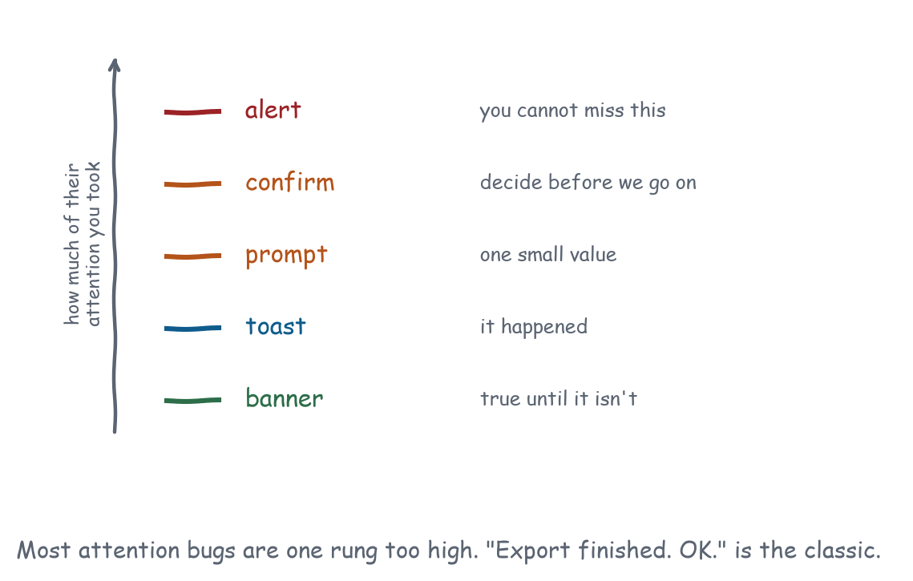

Chapter 8
Dialogs and Attention
Six capabilities, no messages, one broken browser API, and a decision procedure for how loudly to interrupt somebody.
window.alert, window.confirm and window.prompt do nothing at all. All three need the allow-modals sandbox token, which the MCP Apps sandbox does not include, so the call returns immediately with a default value and your code carries on as though the user answered. That last part is what makes it dangerous rather than merely broken: confirm() returns false, which reads as “the user declined”, and a delete flow guarded by it silently stops working. The demonstration has a button that proves it.
So you build the whole attention system yourself, which is the better outcome anyway. The browser’s versions were never appropriate here, for three reasons that all matter more inside a frame than they do in a page:
- They block the main thread, which would freeze your bridge and stop you answering
ui/resource-teardown. - They render outside your styling, so they look like the browser, not the host.
- They are modal to the whole tab, which a card in someone else’s conversation has no business being.
Which one do I use?
These six differ mainly in how much of the user’s attention they take, and the implementations are all easy. Picking the wrong volume is the actual failure, and it is a failure with a cost: every unnecessary interruption trains people to dismiss the next one without reading it, so a view that confirms trivial actions has spent the credibility it needed for the one confirmation that mattered.

Does the user have to decide something before anything else happens? Then it is a dialog: confirm for a binary decision, prompt for a small value.
Did something finish, and does the user just need to know? A toast. Nothing to decide, so nothing to block.
Is something persistently true that changes how the interface should be read? A banner. Stale data, degraded mode, offline, read-only.
Is the view not currently visible, and does it need a person? That is notify.attention, and it is a gap.
The mistake that shows up most is a modal dialog for a completion. “Export finished. OK.” blocks the user to tell them something they can see, and trains them to dismiss dialogs without reading, which then breaks the one dialog that mattered.
Alert: an acknowledgement they cannot miss
dialog.alertCoreLevel 2Yours to buildBlock on an acknowledgement the user cannot miss.
- Ground
- The view implements it. Nobody else can.
- Recipes
- none yet
- Demo
- lab-dialogs
An acknowledgement the user cannot miss. In practice this is the rarest of the six and nearly every instance in the wild is a mis-specified toast.
It earns its place only when two things are true at once: the information changes what the user is about to do, and they are about to do it right now. “Your session expired, so the next save will fail” qualifies while they are typing. “Export finished” does not qualify at all, because nothing they were about to do has changed and the result is visible on screen anyway.
Application behaviour. A <dialog> with showModal(), one button, focus on that button. Escape closes it, because a dialog with a single acknowledgement has nothing to cancel.
Accessibility. showModal() gives you the focus trap, the inert background and the aria-modal semantics for free. A hand-rolled overlay gives you none of those and will be missed by a screen reader user entirely.
Confirm: a binary decision
dialog.confirmCoreLevel 2Yours to buildTake an explicit binary decision before acting.
- Ground
- The view implements it. Nobody else can.
- Recipes
- File Explorer, Approval Center, Settings and Preferences
- Demo
- lab-dialogs
The binary decision, and the two rules that matter are both about the words rather than the widget. Users read the buttons before they read the title, so the buttons have to carry the decision on their own.
Label the buttons with the verb, not with “OK”. A user reading “Delete invoices?” with “OK” and “Cancel” has to reconstruct which button does what. The same dialog with “Delete” and “Keep” can be answered without reading the title.
And prefer undo. A confirmation asks somebody to be careful before they know what happens; undo lets them find out and change their mind. The File Explorer in Recipe 3 does both, deliberately: destructive actions confirm, and the confirmation says the action can be undone, which is what makes the confirmation honest rather than ritual.
Extracted from from apps/lib/view.js
function confirmDialog({ title, body, confirm = "Confirm", cancel = "Cancel",
destructive = false }) {
return new Promise((resolve) => {
const dialog = h("dialog", {},
h("h2", { text: title }),
body ? h("p", { class: "muted", text: body }) : null,
h("div", { class: "row", style: "justify-content:flex-end" },
h("button", { class: "quiet", text: cancel,
onclick: () => { dialog.close(); resolve(false); } }),
h("button", { class: destructive ? "danger" : "primary", text: confirm,
onclick: () => { dialog.close(); resolve(true); } })));
dialog.addEventListener("cancel", () => resolve(false));
dialog.addEventListener("close", () => dialog.remove());
document.body.append(dialog);
dialog.showModal();
});
}The cancel event is the Escape key. Forgetting to resolve on it leaves a promise hanging forever, and in an application that awaits the answer before doing anything else, a hung promise is a frozen interface.
Prompt: one small value
dialog.promptCoreLevel 2Yours to buildCollect one small value without leaving the surface.
- Ground
- The view implements it. Nobody else can.
- Recipes
- none yet
- Demo
- lab-dialogs
One small value collected without leaving the surface: rename this, name that, add a label. The distinguishing test is whether the value needs validation beyond “not empty”. If it does, or if there are two of them, you have a form rather than a prompt, and Recipe 13 is the form.
Application behaviour. Focus and select the input on open, so typing replaces the existing value and Enter submits. Both are what the browser’s prompt did, and both are what people expect.
When not to. If the value needs validation with rules, or two fields, it is a form and not a prompt. Recipe 13 is a form.
Toast: it happened, carry on
notify.toastCoreLevel 2Yours to buildSay saved, copied, failed, and get out of the way.
- Ground
- The view implements it. Nobody else can.
- Recipes
- File Explorer
- Demo
- lab-dialogs
Transient, non-blocking, gone in a couple of seconds: saved, copied, completed. A toast is the right answer whenever the user needs to know something happened and has no decision to make about it, which covers most of what an application wants to say.
Accessibility. A toast that is only a visual is invisible to a screen reader. role="status" on the toast, or a parallel announcement into a polite live region, makes it perceivable. The helper in this repository does the former; Chapter 13 covers the latter and explains when each is right.
Failure modes. Toasts for failures are a judgement call. A failed save is usually not a toast, because the toast will be gone before the user understands the consequence and there will be nothing left on screen to say that the document is unsaved. Toast the successes, banner the ongoing problems.
Banner: true until it isn’t
notify.bannerExtendedLevel 2Yours to buildHold a persistent, non-modal status in view.
- Ground
- The view implements it. Nobody else can.
- Recipes
- Monitoring Console, Approval Center
- Demo
- lab-dialogs
Persistent and non-modal. The distinguishing property is that a banner lasts exactly as long as its condition, which obliges the code that raises one to own the code that removes it. A banner nobody clears becomes furniture, and furniture is invisible: users stop reading a warning that has been there since Tuesday, including on the day it starts mattering.
Good uses are all statements about the state of the interface rather than about an event: this data is four minutes stale, you are offline and looking at a cached copy, this document is read-only because somebody else has it open, this host does not support downloads so the export button is missing.
The last row is the exception to Chapter 1. Normally you omit a control you cannot offer. When the user is hunting for it, a banner saying “this host cannot save files, use Copy” beats a mystery.
How do I get attention from a hidden view?
notify.attentionExtendedLevel 3Not standardisedSignal from a backgrounded view that a human is needed.
- Ground
- No standard mechanism exists yet. The entry carries a workaround.
- Recipes
- Monitoring Console, Agent Control Center
- Demo
- lab-dialogs
You cannot. A view that is scrolled away, collapsed, or on a tab nobody is looking at has no way to say a person is needed.
This matters most for the recipes that run over time. Recipe 9’s monitoring console sees an error at three in the morning. Recipe 11’s control centre has a task that failed and needs a retry. Recipe 10’s approval queue has a refund waiting. In every case the interface knows and the user does not.
Workarounds. Make the state loud on return rather than at the moment it happens: the console raises a banner describing what happened while the view was hidden, which the user meets when they come back. Where the host supports it, ui/update-model-context puts the fact where the model can raise it in the next turn, which is indirect but real. And a view can send notifications/message at warning level, which lands in the host’s log and is at least auditable.
What a mechanism would look like. A ui/request-attention notification with a severity and a short label, and the host free to badge, chime, or ignore. The host has to stay in control, because the alternative is thirty embedded views competing for a notification badge. Appendix B has it, next to surface.reveal, which is the same problem seen from the other side.
What is the host doing meanwhile?
Nothing, and it cannot. No message in this chapter exists, so the host has no way to learn that your view has a modal open, and no way to coordinate with it. That asymmetry produces three specific consequences, and none of them has a workaround worth the name.
Three consequences.
- Your dialog is clipped by the frame. A 500px dialog in a 380px view has its buttons off screen. Size to the container and scroll the body.
- Your backdrop dims your frame, not the host’s window. The user can still click anything outside it, so a modal here is modal to a card.
- Teardown during a dialog leaks.
ui/resource-teardownremoves the frame and the promise you were awaiting never settles. Resolve it in afinally.
The corollary is that a genuinely blocking decision, the kind where the user must not be able to do anything else, cannot be built inside a view at all. That is an approval, it belongs to the host, and Chapter 21 is about the fact that the mechanism for it does not exist yet.
Conformance checks
window.alert,window.confirmandwindow.promptare inert, and the view does not depend on them.- A dialog opened in the view traps focus and restores it on close.
- Escape closes any open overlay and resolves its promise.
- A dialog taller than the container scrolls its body rather than overflowing the frame.
- Toasts carry
role="status"or announce into a live region. - A banner is removed when the condition it describes ends.
What to remember
All of it is yours to build, which means all of it is yours to keep consistent, and consistency is harder than any individual widget. A view with two dialog implementations has two focus behaviours, two escape behaviours and two visual languages, and the second one always gets less attention than the first. Pick one of each and use it everywhere.
The 13 recipes share one of each, defined once in apps/lib/view.js: confirmDialog, promptDialog, toast and the .banner class.